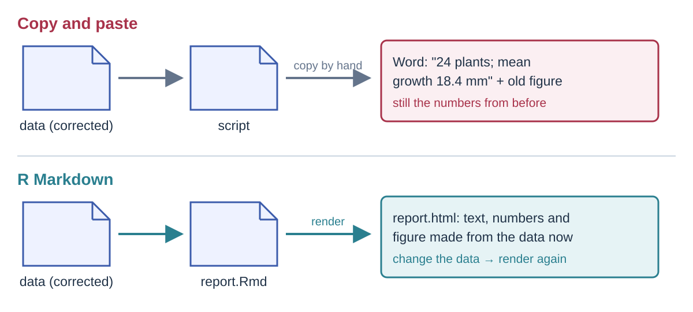
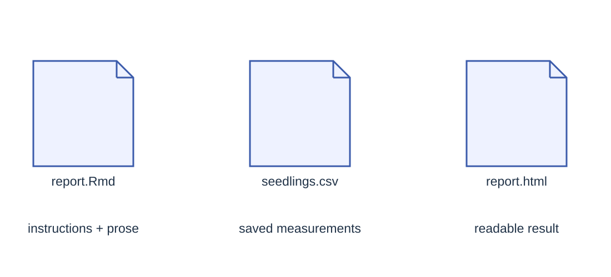
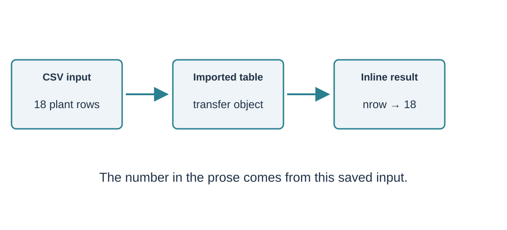
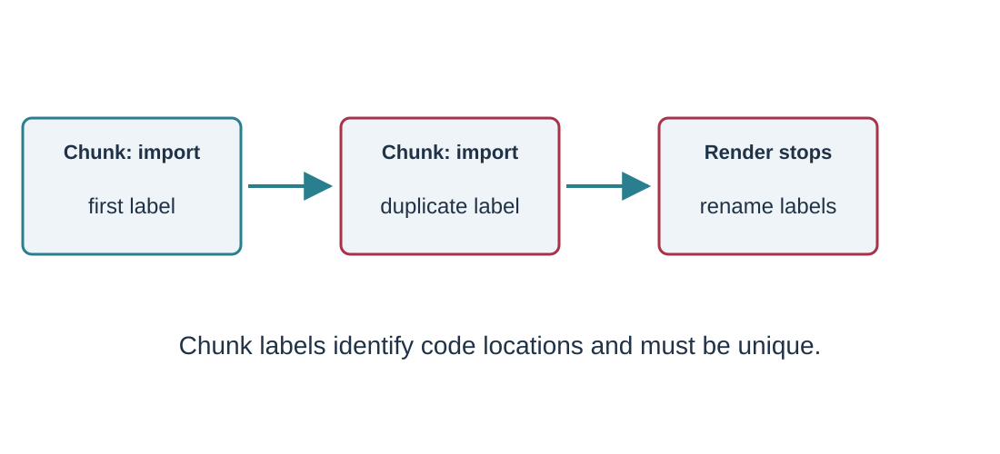

Day 9 — Text, code and results in one R Markdown file
Data Analysis in Life Sciences
About this lecture
You have a script, a figure and a few numbers. The usual next step is to paste the figure into Word and type the numbers into sentences. Then one value in the data is corrected, and the document keeps the old numbers. Months later, nobody, including you, can say which version of the data produced Figure 2. An R Markdown report keeps the explanation, the code and its results in one file, and rebuilds all of them from the data each time you render it.
Today you will:
read the parts of an .Rmd file: header, text and code chunks;
render it into an HTML report you can open in any browser;
put a calculated number into a sentence, so it updates itself;
find and fix the first error when rendering stops.
Day 10 uses this to write your first complete short report. Every report in this course is made this way.
Copied numbers go stale

Top: numbers copied by hand into Word stay old when the data are corrected. Bottom: a rendered report is rebuilt from the corrected data.
Copy and paste: every correction means finding and retyping every affected number and figure.
R Markdown: correct the data, render again, and text, numbers and figures all agree.
One source file, one readable report
report.Rmd is the source: your text plus R code. You edit this.
Rendering runs the code and writes report.html: text, results and figures.
The HTML is a reading copy. Edits made there are lost at the next render.
Keep the .Rmd, the data and the HTML together.
An R Markdown source with text and code is rendered into an HTML report containing a plot.
Inside an .Rmd file
---
title: "Seedling growth"
output: html_document
---
## Question
How much did the seedlings grow?
```{r import}
library(readr)
seedlings <- read_csv("data/seedlings.csv",
show_col_types = FALSE)
```
Header between the --- lines: title and output format.
Text as you would write it. ## Question is a heading.
Code chunk between ```{r} and ```. import is the chunk’s label; each label must be unique.
# outside a chunk makes a heading; inside a chunk it starts an R comment.
Never put this line inside the report: a report must not render itself.
output_dir puts the HTML in reports/; the .Rmd stays in the project folder.

The report source, the original data and the HTML output have different roles and are kept together.
Chunks run from top to bottom
Rendering runs chunks in order, like a script from the top.
A plot of growth_mm must come after the chunk that calculates it.
library() and the import go first.
Installing packages is setup, not part of the report.
Loading packages and importing come first, then calculating growth, then plotting and interpreting.
The report starts from nothing
Knit starts a fresh R session. Objects you made in the Console do not exist there.
So every import and calculation the report needs must be written in the report.
The test: restart R, then render. If it works, the report is complete.
An object in your interactive R session does not exist when the report is rendered in a fresh session.
Put calculated numbers into sentences
In the text of the .Rmd:
There are `r nrow(seedlings)` plants.
The HTML reads: There are 24 plants.
Import the 18-plant transfer study instead, and it reads 18. No retyping.
But words you typed yourself, such as “twelve per group”, do not update. Reread the text when the data change.

The number in the sentence is calculated from the imported table.
A figure with a caption
```{r growth-figure, fig.cap="Each point is one independently potted seedling."}
ggplot(seedlings, aes(x = treatment, y = growth_mm)) +
geom_point(position = position_jitter(width = 0.08, height = 0, seed = 8)) +
labs(x = "Treatment", y = "Change in seedling length (mm)")
```
Reuse the plotting code from Day 8; add library(ggplot2) to the first chunk.
The caption says what the figure shows. A sentence below it says what you see in it.
When rendering stops: read the first error
The message names the chunk. Check, in order:
Is the package loaded (library()) before use?
Are file and column names spelt exactly right?
Is the object made in an earlier chunk?
Are all chunk labels unique, every fence closed?
Change one thing, render again.

Two chunks both labelled import stop the render; giving them different labels fixes it.
Sharing the .Rmd alone is not enough
The report reads data/seedlings.csv. Someone who gets only report.Rmd cannot render it.
Share the project folder: .Rproj, .Rmd, data/, output/, reports/, with the same layout.
A screenshot or a shortcut does not replace the data file.
Rendering the HTML needs both the report source and its input data file.
Summary
Idea
Key fact
Why
Results come from the data at every render; no copied numbers that go stale
Source and output
Edit report.Rmd; report.html is a reading copy, rebuilt at each render
Parts
Header between ---; text; code chunks between fences, each with a unique label
Render
Knit, or rmarkdown::render() in the Console, never inside the report
Order
Chunks run top to bottom: packages, import, calculation, then plot
Fresh session
The report must contain every step; restart R, then render to test
Inline R
`r nrow(seedlings)` puts a calculated number in a sentence; typed words still need checking
Errors
Read the first error and its chunk label; change one thing at a time
Sharing
.Rmd plus data in the same project layout
Next (Day 10, first report): write a short report that answers a biological question and that someone else can rerun.
Now:open the Day 9 exercises. Leave with report.Rmd (question, methods, labelled figure, interpretation) and its rendered HTML, rendered again after restarting R.